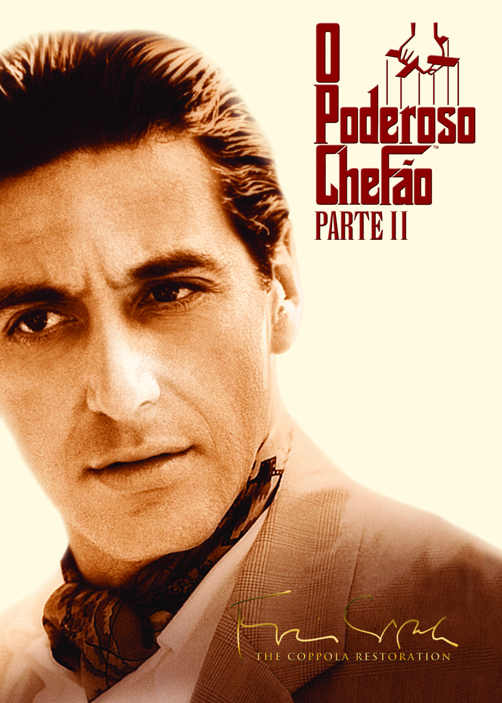

O filme apresenta uma dualidade entre duas realidades distintas dentro de uma família envolvida com o crime. Entre esses dois caminhos, temos Michael Corleone, que agora se torna o chefe da família Corleone e luta para manter e expandir o legado familiar. Sua jornada é marcada por decisões estratégicas, conflitos internos e uma crescente frieza emocional, que o afastam dos valores originais da família e o mergulham em uma espiral de poder e isolamento. Ao mesmo tempo, acompanhamos Vito Corleone, cuja trajetória é mostrada desde a infância até sua ascensão como o poderoso chefão de Nova York. O filme retrata sua chegada aos Estados Unidos, os desafios enfrentados como imigrante e sua habilidade em conquistar respeito e influência no submundo do crime. A narrativa revela como a família aumentou sua influência partindo do absoluto zero, construindo um império baseado em lealdade, estratégia e carisma, atitudes que contrastam com as de Michael.
Ficha Técnica
Título Original: The Godfather: Part II
Duração: 202 minutos
Ano produção: 1974
Estreia: 20/12/1974
Distribuidora: Paramount Pictures
Dirigido por: Francis Ford Coppola
Orçamento: U$ 13 milhões
Classificação: 14 anos
Gênero: Drama, Policial
País de Origem: EUA
